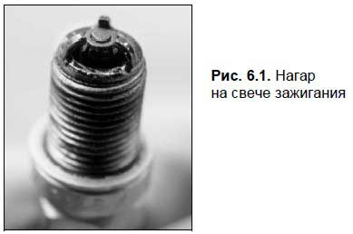
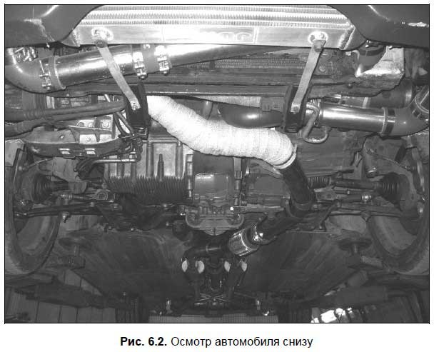

Как самому распознать неисправность?
Диагностика узлов и агрегатов автомобиля — процесс непростой, многие неисправности можно обнаружить только с помощью специального оборудования (стенды, подъемники, компьютерные системы диагностики и т. д.). Однако некоторые несложные неисправности можно диагностировать и самостоятельно, причем это под силу даже малоопытным водителям. В данной главе мы расскажем о том, как своими силами можно определить наличие некоторых распространенных неисправностей.
Диагностика двигателяМногие неисправности двигателя можно диагностировать на слух.Но учтите, что такая диагностика должна проводиться на предварительно прогретом двигателе, потому что если мотор холодный — зазоры в некоторых сопряжениях могут быть увеличенными, следовательно — повысится уровень шумов. Если двигатель исправен, то после прогрева эти шумы исчезнут. Если же нет — читайте далее.
Дробный звук, который тонально изменяется в зависимости от частоты вращения коленчатого вала (с увеличением оборотов он становится более высоким), с высокой степенью вероятности может свидетельствовать об увеличении зазоров в подшипниках коленчатого вала между поршнями и цилиндрами либо об износе вкладышей и коренных подшипников. О последней неисправности может также свидетельствовать сильный глухой стук низкого тона, который отчетливо слышен при резком изменении частоты вращения коленчатого вала. Если «застучали» шатунные или коренные подшипники коленвала, то эксплуатировать автомобиль нельзя, поскольку зазор в подшипниках будет увеличиваться, а антифрикционный слой на вкладышах быстро изнашивается. В конечном итоге на шейках коленвала появятся «задиры», и придется выполнять шлифовку шеек коленвала под вкладыши ремонтного размера.
О чрезмерном осевом зазоре коленвала информирует резкий, с неравномерными промежутками звук, причем эти промежутки особенно заметны при плавном увеличении частоты вращения коленвала.
Если из двигателя доносится звонкий стук, напоминающий звон колокольчиков — значит, имеет место «биение» поршней из-за увеличенного зазора между поршнями и цилиндрами. Также об этой неисправности может свидетельствовать резкий металлический стук в местах, которые соответствуют верхней и нижней мертвым точкам поршней (как правило, этот стук двойной), который особенно хорошо прослушивается при работе двигателя на холостых оборотах.
Одной из самых неприятных неисправностей является трещина в поршне. О ее наличии можно догадаться по характерному стуку, который напоминает удары деревянного молотка по металлу. Эксплуатировать автомобиль в данном случае запрещается — иначе возможно разрушение поршня и, как следствие, выход двигателя из строя.
Если из двигателя доносится громкий стучащий звук (он может напоминать работу трактора) — скорее всего, износился распределительный вал. В данном случае автомобиль можно эксплуатировать, пока хватает хода регулировочных болтов для установки зазора.
Также стук может быть обусловлен поломкой клапанных пружин либо износом рычагов. При наличии слишком больших зазоров клапанного механизма их следует отрегулировать, а во всех остальных случаях неисправные запчасти подлежат замене.
Основным критерием, по которому можно определить чрезмерное увеличение зазоров у клапанов, является частый металлический стук, который хорошо слышен при работе двигателя на холостых оборотах с малой частотой вращения коленчатого вала. Данная неисправность приводит к повышенному износу торцов стержней клапанов, наконечников стержней или регулировочных шайб, а также к потере мощности двигателем, поскольку время пребывания клапанов в открытом положении уменьшается, и как следствие — ухудшается наполняемость цилиндров горючей смесью и полнота их очистки на четвертом такте работы.
Многие неисправности двигателя можно диагностировать по цвету выхлопных газов.Здесь существует важное правило: если мотор начал дымить — скорее всего, ему требуется ремонт.
Если из выхлопной трубы выходит ярко-голубой или синий дым, это свидетельствует о неисправности двигателя, а точнее — об износе следующих деталей:
? поршневые кольца;
? маслосъемные колпачки;
? стержни клапанов или направляющие стержней клапанов (обычно это происходит при использовании некачественного моторного масла или при нерегулярной его замене).
Синева выхлопных газов — это следствие того, что в камеру сгорания попадает моторное масло, а из-за этого происходит его повышенный расход (в среде водителей есть такое выражение: «мотор ест масло»). Но отметим, что некоторые дизельные двигатели с прямым впрыском выпускают голубой дым при прогреве, но впоследствии (когда мотор достаточно прогрет) этот дым исчезает.
Черный цвет выхлопных газов может свидетельствовать о неполном сгорании масла, недостатке воздуха или высоком содержании углеродов. В данном случае нужно проверить состояние распылителей форсунок — не исключено, что нарушена их герметичность, что приводит к неполному сгоранию топлива. Еще одна возможная причина черного дыма — загрязнение воздушного фильтра и неверный угол опережения впрыска. Также не исключено загрязнение продуктами сгорания и маслами впускного коллектора. Эта неисправность устраняется несложно — нужно снять и прочистить впускной коллектор.
Также черный цвет выхлопных газов может появляться из-за недостаточной компрессии в цилиндрах двигателя. Как следствие — топливо сгорает не полностью, причем часто наблюдается его перерасход. При наличии данной неисправности черный дым из выхлопной трубы может сопровождаться характерными громкими хлопками — так в выхлопной трубе сгорают остатки топлива.
Если говорить о неисправностях системы зажигания автомобиля, то среди них в первую очередь нужно отметить следующие: позднее зажигание, раннее зажигание, перебои в одном или нескольких цилиндрах, а также полное отсутствие зажигания.
Если вы заметили, что ваш двигатель теряет мощность и одновременно с этим перегревается — возможно, имеет место быть позднее зажигание. Если же потеря мощности сопровождается характерным стуком в двигателе — видимо, речь будет идти уже о раннем зажигании. В любом случае, для решения проблемы необходимо отрегулировать момент зажигания (как говорят опытные автомобилисты, «выставить зажигание»). Отметим, что на современных автомобилях самостоятельно это сделать практически невозможно, поэтому сразу обращайтесь на СТО.
Если вы заметили, что какой-то цилиндр работает с перебоями (мотор «троит») — в первую очередь проверьте состояние свечи зажигания: возможно, у нее на электродах образовался нагар (рис. 6.1), который нужно снять, либо отрегулировать зазор между электродами (об этом мы уже говорили чуть выше). Также неисправностью свечи является наличие трещин и иных механических повреждений на керамическом изоляторе.

Иногда бывает трудно «на глаз» определить, какая именно свеча неисправна (следовательно — какой цилиндр работает с перебоями). Чтобы быстро найти неисправность, поочередно отсоединяйте высоковольтные провода от соответствующих свечей путем снятия их наконечников: если перебои в работе двигателя стали более заметны — значит, данная свеча исправна, а если после отсоединения свечи работа двигателя не изменилась — значит, именно она является неисправной. Дополнительным подтверждением неисправности свечи может являться то, что она после выкручивания из горячего двигателя будет несколько холоднее остальных.
Однако может быть и так, что неисправен соответствующий высоковольтный провод, вследствие чего электричество либо поступает с перебоями, либо не поступает вообще. Также рекомендуется проверить состояние контакта, которым соединяется этот провод со свечой: бывает так, что для устранения неисправности достаточно плотнее прижать провод к свече. На старых машинах, где используется контактная система зажигания, проблема может также быть в соответствующем гнезде крышки прерывателя-распределителя.
Если наблюдаются перебои в работе разных цилиндров — проверьте состояние центрального высоковольтного провода: возможно, у него повредилась изоляция. Также причина может быть в вышедшем из строя конденсаторе, плохом контакте высоковольтного провода с клеммой катушки зажигания либо в гнезде крышки прерывателя-распределителя (в машинах с контактной системой зажигания). На старых автомобилях возможно обгорание контактов прерывателя, периодическое замыкание на «массу» подвижного контакта прерывателя из-за поврежденной изоляции, появление трещин на крышке трамблера, неотрегулированный зазор между контактами прерывателя.
Одной из самых неприятных неполадок в системе зажигания является полное отсутствие зажигания. Как правило, причина кроется в неисправностях высоковольтных или низковольтных цепей, и для ее устранения придется обратиться на станцию технического обслуживания.
Диагностика трансмиссии, подвески и ходовой частиВ данном разделе мы расскажем о том, как самостоятельно диагностировать распространенные неисправности трансмиссии, подвески и ходовой части автомобиля.
Помните: чтобы максимально достоверно оценить состояние этих агрегатов автомобиля, нужно заехать на эстакаду или смотровую яму либо поднять машину на подъемник (рис. 6.2). Это позволит заодно посмотреть, в каком состоянии находится днище автомобиля, а также его узлы и агрегаты, доступ к которым осуществляется снизу.

Чтобы проверить исправность амортизаторов, сильно и резко нажмите на крыло автомобиля (при проверке передних амортизаторов — переднее крыло, задних — заднее крыло). Кузов автомобиля с нормальными рабочими амортизаторами должен вернуться в первоначальное состояние неподвижности не более чем после одного-двух «качков». При наличии возможности оцените внешний вид амортизаторов: на них не должно быть потеков. Но знайте, что полностью проверить состояние и работоспособность амортизаторов можно только на специальном стенде, а эта услуга стоит недешево.
Коробка передач и ведущий мост должны быть сухими: наличие потеков масла на них не допускается. Резиновый кожух карданного вала должен быть целым, без трещин и разрывов.
Чтобы оценить работу сцепления, запустите мотор, выжмите сцепление и послушайте, как оно работает. Если слышится характерное тихое шипение — это с высокой долей вероятности может свидетельствовать о том, что упорный подшипник сильно изношен или вообще почти разрушен. Попробуйте при включенном двигателе, выжав сцепление, поочередно попереключать передачи: если они переключаются с трудом, и этот процесс сопровождается шумом или скрежетом — значит, сцепление полностью не выключается.
Включите первую передачу, троньтесь с места и обратите внимание на то, при каком положении педали сцепления автомобиль начал движение. Если он тронулся, как только вы немного отпустили педаль сцепления — значит, скорее всего, сцепление в хорошем состоянии. А вот если для того, чтобы машина тронулась с места, вам пришлось отпустить педаль сцепления почти полностью — значит, оно сильно изношено и в скором времени потребует ремонта или замены. Возможно, для ремонта сцепления достаточно будет переклепать накладку; это обойдется недорого. Но не исключен вариант, при котором придется менять полностью сцепление в сборе (корзину, диск и выжимной подшипник) — это уже может стоить немалых денег.
Проверить работу трансмиссии можно следующим образом: заведите двигатель, включите задний ход, начните движение, проехав несколько метров назад, выжмите сцепление, включите первую передачу и начните движение вперед. Если при выполнении данного маневра вы услышите характерный щелчок в ведущем мосту либо в коробке передач — это с высокой степенью достоверности будет свидетельствовать о значительном износе трансмиссии (чем громче щелчок — тем сильнее износ).
Люфт полуосей можно проверить вращением их взад-вперед. Небольшой люфт допустим, но большим он быть не должен. При возникновении каких-либо сомнений проверьте машину на поворотах. Если при движении на поворотах слышен хруст — это свидетельствует о неисправности ШРУСов.
Многие неисправности можно диагностировать только при движении автомобиля. Для этого выберите какую-нибудь дорогу с малоинтенсивным движением. Разогнавшись, держите скорость на одном уровне и отпустите ненадолго рулевое колесо: автомобиль должен двигаться прямо, а если дорога немного выпуклая — то возможен легкий уход в сторону уклона. Если на ровной дороге при движении на постоянной скорости машину ведет вправо или влево — вероятно, у нее не отрегулированы развал и схождение колес. Более серьезная причина — неисправность подвески или нарушение геометрии кузова (такое бывает после серьезного ДТП). Однако если машину «ведет» в сторону, рекомендуется в первую очередь проверить давление в шинах: возможно, какое-то колесо просто немного спустило, и для решения проблемы достаточно будет его немного подкачать.
Также машину может «вести» в сторону по причине того, что на колесах используются покрышки с разным рисунком протектора.
Помни об этом.
ПДД требуют, чтобы рисунок протектора был одинаковым хотя бы на колесах, стоящих на одной оси.
Во время движения автомобиля передачи должны переключаться легко и свободно, но в то же время рычаг переключения передач не должен «болтаться».
Разгоните машину на дороге, после чего сбросьте газ: если при этом слышны воющие звуки — вероятно, сильно изношены или неисправны шестерни.
Найдите на дороге неровное место (желательно — с выбоинами и ямами) и продвиньтесь по нему. Если при движении по ямам (а также — на поворотах) в картере моста явно слышен металлический стук — скорее всего, в машине сильно изношен дифференциал. Кстати, любые другие звуки и стуки, доносящиеся из подвески, крайне нежелательны: это свидетельствует о наличии серьезных проблем в ходовой части автомобиля. Часто подобные звуки обусловлены неисправностью или высокой степенью износа следующих запасных частей: стабилизатор поперечной устойчивости, резиновые втулки креплений амортизаторов, сами амортизаторы, шарниры подвески, полуоси, ШРУСы и др.
Если во время движения автомобиля явно слышен какой-то гул, напоминающий звук летящего самолета, — возможно, требует замены ступичный подшипник. Учтите, на некоторых машинах его можно заменить только вместе со ступицей. Если дело действительно в подшипнике — можно прислушаться и определить, на каком именно колесе он изношен. Кроме этого, гул может также быть вызван неисправностью редуктора заднего моста (на заднеприводных машинах). Но учтите, что гудеть могут и новые покрышки.
Проверьте автомобиль на скорости при движении на поворотах. Кузов автомобиля при движении на поворотах не должен слишком сильно накреняться. Если же это так — видимо, пришла пора менять амортизаторы.
Чтобы проверить трансмиссию на предмет наличия неполадок и износа, полезно выполнить следующие действия: при движении на спуске поставьте автомобиль на нейтральную передачу, выключите зажигание, затем вновь включите зажигание и включите передачу, которая соответствует текущей скорости автомобиля (при этом машина должна завестись на ходу).
Диагностика рулевого управленияНекоторые неполадки рулевого управления также можно диагностировать самостоятельно, и здесь мы расскажем о том, как это делать.
Иногда во время работы гидроусилителя (т. е. при повороте рулевого колеса) слышен характерный гул. Как мы уже отмечали ранее, причиной может быть недостаток жидкости в системе гидроусилителя.
Также распространенная неполадка — когда ощущается слишком тугое вращение рулевого колеса, или даже заедание в рулевом механизме. Причиной может быть не только вышедший из строя гидравлический усилитель, но и неправильная регулировка бокового зазора в соединении червячной пары, повреждение подшипников червяка, повышенный износ любого компонента червячной пары, погнутость рулевых тяг, недостаточное количество масла в картере рулевого механизма. Большинство перечисленных неисправностей можно устранить только на станции технического обслуживания.
Иногда рулевое управление «разбалтывается», и в нем возникает слишком большой свободный ход рулевого колеса (так называемый «люфт»). Причины его возникновения могут быть самыми разными: нарушение регулировки в соединении червячной пары или износ рабочих поверхностей червяка и ролика; увеличение зазоров в шарнирах рулевых тяг; износ подшипников червяка; износ втулок вала рулевой сошки; ослабление крепления картера рулевого механизма и др.
Иногда водитель слышит характерные стуки в рулевом управлении. Это может быть при наличии следующих неисправностей: слишком высокий износ (правильнее даже сказать — разрушение) рабочих поверхностей червячной пары, высокий люфт в шарнирах рулевых тяг или в маятниковом рычаге, ослабление крепления картера рулевого механизма.
Если имеется нарушение герметичности рулевого механизма, то это приводит к утечке масла. Данная неисправность может являться причиной возникновения большинства проблем у рулевого механизма, которые перечислены выше.
Диагностика тормозной системыКак мы уже неоднократно отмечали ранее, за исправностью тормозной системы нужно следить особенно тщательно. Здесь мы расскажем о том, как самостоятельно диагностировать некоторые характерные неполадки тормозной системы автомобиля.
Разгоните автомобиль до скорости 50–60 км/ч, резко затормозите и обратите внимание на поведение машины: ее не должно уводить ни вправо, ни влево, все колеса должны затормаживать одновременно. Если это не так — значит, в тормозной системе автомобиля имеются серьезные неполадки. Стоит ли говорить, какими опасными последствиями это может обернуться, особенно при движении на скользкой дороге или в условиях плохой видимости!
Тормозная педаль не должна быть слишком мягкой: в противном случае торможение может оказаться неэффективным. Для устранения подобной неисправности в большинстве случаев достаточно прокачать тормоза. Если это не помогло — возможно, придется ремонтировать либо менять главный тормозной цилиндр или тормозные цилиндры на колесах; не исключено также, что проблема — в тормозных трубках (шлангах), или в изношенных тормозных колодках. В некоторых случаях приходится менять тормозной суппорт в сборе.
При торможении тормоза не должны «визжать» и издавать другие посторонние звуки. Вибрация тормозной педали также свидетельствует о неполадках в тормозной системе (либо — в подвеске).
Одна из самых характерных неполадок — пружинящая и проваливающаяся педаль тормоза. Возможные причины — наличие воздуха в тормозной системе автомобиля или недостаток тормозной жидкости в расширительном бачке. В данном случае необходимо проверить герметичность всех деталей привода и залить бачок тормозной жидкости до максимальной отметки, а также удалить воздух из тормозной системы путем прокачки тормозов.
Иногда у тормозной педали наблюдается слишком большой свободный ход. Неисправность довольно опасная, ее возможные причины перечислены ниже.
? Недостаток жидкости в главном тормозном цилиндре.
? Частичный или полный износ тормозных колодок, тяжелый ход установочного механизма.
? Повреждение манжеты в главном тормозном или в одном из колесных цилиндров.
? Негерметичность тормозной системы и, как следствие — попадание в нее воздуха.
? Тормозные колодки не соответствуют рекомендациям производителя автомобиля.
? Тормозной суппорт не параллелен тормозному диску.
Если при торможении автомобиль «уводит» в сторону — возможно, накладки тормозных колодок на одной оси изготовлены из различных материалов. Также не исключено, что накладки просто замаслились и не обеспечивают должной силы трения. Также причинами данной неисправности могут быть загрязнение или повреждение направляющих пальцев тормозных суппортов либо неравномерный износ тормозных дисков или колодок.
Иногда во время движения автомобиля наблюдается сильный нагрев его колес.
Ниже перечислены неисправности тормозной системы, которые могут являться причиной этого опасного эффекта.
? Неправильная регулировка высоты педали тормоза.
? Деформация манжетных уплотнений главного цилиндра или деформация суппорта.
? Критический износ тормозных колодок или накладок.
? Застревание поршня главного тормозного цилиндра в канале цилиндра.
? Препятствие в компенсаторе главного тормозного цилиндра.
? Неисправность тормозных цилиндров.
Также колеса могут подтормаживать, если засорено компенсационное отверстие главного тормозного цилиндра либо недостаточен зазор между тягой и поршнем главного тормозного цилиндра.
Характерный стук, доносящийся из тормозной системы, может свидетельствовать о наличии следующих неисправностей:
? тормозные колодки некачественные или не соответствуют рекомендациям изготовителя автомобиля;
? боковое биение тормозных дисков;
? частичная коррозия тормозных дисков.
Многим наверняка доводилось слышать, как тормоза характерно скрипят или «свистят». Иногда причиной может являться продолжительная стоянка автомобиля при повышенной влажности (например, в течение месяца при дождливой и слякотной погоде). Как правило, в данном случае скрип исчезает после нескольких первых торможений, и для устранения неисправности ничего делать не нужно. Но могут быть и более серьезные причины, например: коррозия края тормозного диска, слишком большой люфт колесных подшипников, загрязнение тормозного суппорта или отделение накладки тормозной колодки. Здесь может потребоваться серьезный ремонт: в частности, при коррозии края тормозного диска его придется либо менять, либо растачивать с последующей полировкой, а при загрязнении тормозного суппорта необходимо очистить шахты тормозного суппорта и нанести специальную смазку.